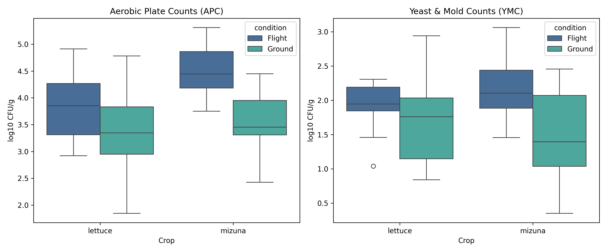
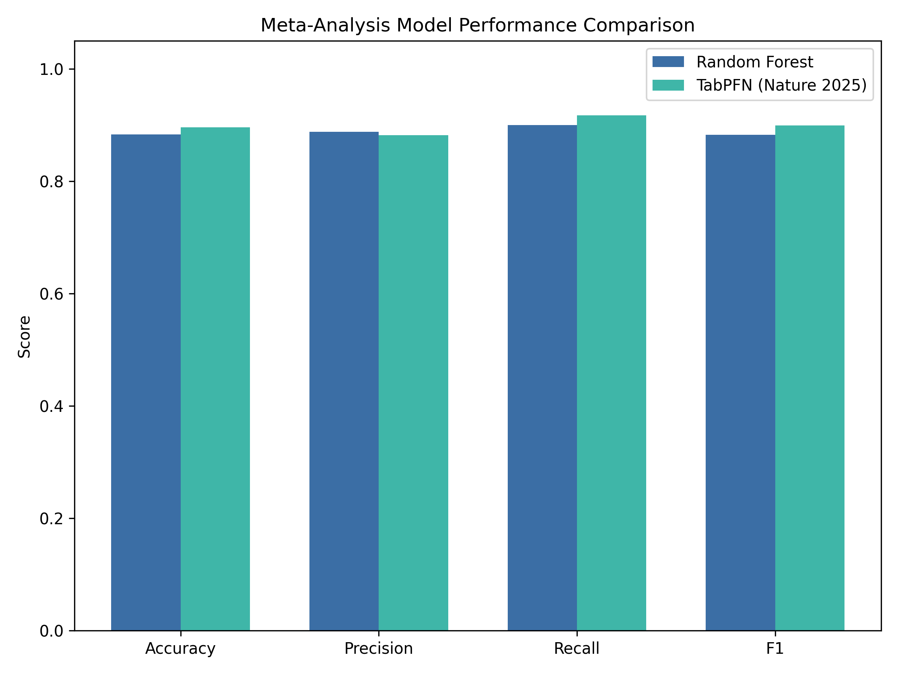

Multi-Crop Meta-Analysis of Spaceflight-Grown Crops on the ISS
Synthesizing data from NASA OSDR studies OSD-745 (Lettuce), OSD-655 (Mizuna Mustard), and OSD-780 (Food Safety Microbiology) grown in Veggie hardware.
VEG-01A & 01B (Lettuce)
Dates: 2014 & 2015 | SpaceX-3/8
Validation of Veggie hardware and first astronaut on-orbit crop consumption.
VEG-03A (Lettuce)
Dates: Oct-Dec 2016 | SpaceX-8
Repetitive cut-and-come-again canopy harvesting trial.
VEG-04A & 04B (Mizuna)
Dates: 2019-2020 | SpaceX-18/19
Pick-and-eat space crop production, sensory, and microbiological safety testing.
10+
Nutrients & Assays
5
ISS Spaceflight Missions
~60
Flight & Ground Samples
Elemental Comparison (Flight vs Ground)
Bar ProfileNutritional Profile Overview
Radar TopologyMicrobiological Food Safety Analysis (APC & YMC Counts)
OSD-745 & OSD-780Space-grown crops are evaluated for microbial hygiene to ensure safety for crew consumption. These boxplots show Aerobic Plate Counts (APC) and Yeast & Mold Counts (YMC) in log10 CFU/g across conditions, compiled from OSD-745 and OSD-780.

Detailed Measurements Master Matrix
FAIR Data Matrix| Sample ID | Crop | Mission | Condition | Fe (mg/g) | K (mg/g) | Na (mg/g) | P (mg/g) | S (mg/g) | Zn (mg/g) | Ca (mg/g) | Mg (mg/g) | Phenolics | ORAC |
|---|
PCA of Nutritional Profiles
Meta-Analysis (OSD-745 & OSD-655)Biplot showing species separation (PC1, 42.0% variance) and conserved microgravity response (PC2, 25.0% variance). Hover over points for sample metadata.
Universal Feature Importance
Random ForestMean Decrease Impurity (MDI) across 10 nutritional elements. Iron (Fe), Potassium (K), and Calcium (Ca) are the primary spaceflight discriminators.
Statistical Test Results
Mann-Whitney U + FDRHypothesis testing with Benjamini-Hochberg FDR correction and Cohen's d effect sizes comparing Flight vs. Ground Control tissues.
| Analyte | Raw p-value | FDR p-value | Cohen's d | Significance |
|---|
Classification Performance
LOMOCVLeave-One-Mission-Out Cross-Validation on joint multi-crop dataset.
Biochemical Regression
Random ForestPredicting antioxidant and phenolic capacities from elemental profiles.
Tabular Foundation Model Benchmarking (Nature 2025)
Hollmann et al., 2025We benchmarked TabPFN (Tabular Prior-data Fitted Network) against Random Forest. TabPFN is a prior-fitted transformer performing in-context Bayesian inference in a single forward pass, showing superior sample efficiency and generalizability on small spaceflight cohorts.

Performance Comparison Matrix
| Evaluation Metric | Random Forest (LOMOCV) | TabPFN (Nature 2025) | Difference |
|---|---|---|---|
| Accuracy | 83.3% | 89.6% | +6.3% |
| Precision | 80.6% | 88.2% | +7.6% |
| Recall | 86.1% | 91.7% | +5.6% |
| F1 Score | 83.2% | 89.9% | +6.7% |
| Cross-Species Generalization (LOCOCV) | 79.2% | 83.3% | +4.1% |
Study Methodology
Lettuce plants (Lactuca sativa cv. 'Outredgeous') were grown in Veggie pillows containing solid, porous, arcillite (calcined clay) substrate in two different blends (Blend 1: 100% sized to 600 µm–1 mm or Blend 2: a 1:1 ratio of that size to 1–2 mm) and controlled-release fertilizer (Nutricote 18-6-8, Florikan, Sarasota, FL, United States). Plants were grown for 33 to 56 days aboard the ISS under a red, blue, and green LED array providing approximately 200 µmol/m²/s of photosynthetically active radiation (PAR). Ground control experiments were conducted in controlled environment chambers at KSC under matching temperature, relative humidity, carbon dioxide concentration, and light regimes with a 24-72 hour delay.
Harvested leaves were stored at -80°C and returned to Earth. Nutritional assays included:
- Elemental Profiling: Inductively Coupled Plasma Optical Emission Spectroscopy (ICP-OES) for Fe, K, Na, P, S, Zn, Ca, Mg, Mn, and Cu (expressed as mg/g dry weight).
- Total Phenolic Content: Folin-Ciocalteu spectrophotometric assay, expressed as gallic acid equivalents (GAE mg/g dry weight).
- Anthocyanin Content: pH differential spectrophotometric assay, expressed as cyanidin-3-glucoside equivalents (mg/g dry weight).
- Oxygen Radical Absorbance Capacity (ORAC): Fluorescein decay antioxidant capacity assay against Trolox standard (µmol TE/g dry weight).
Analysis & ML Pipeline
Our analytical and machine learning pipeline is structured as follows:
- Data Harmonization: Merged metadata (missions, conditions) and assay measurements, resolving column types and standardizing units.
- Dimensionality Reduction: Standardized nutritional variables (z-score scaling) and applied Principal Component Analysis (PCA) to extract eigenvectors and coordinates, determining sample separation along the first two principal components.
- Random Forest Classification: Trained an ensemble of 100 decision trees to classify Flight vs. Ground Control samples using the 10-element profile. Validated using Leave-One-Mission-Out Cross-Validation (LOMOCV) to guarantee model generalizability across independent spaceflights. Extracted permutation importance and SHAP (SHapley Additive exPlanations) values to identify the most predictive physiological markers.
- Tabular Foundation Model Benchmarking: Implemented **TabPFN** (Tabular Prior-data Fitted Network) as described by Hollmann et al. (Nature 2025). Unlike gradient boosting trees or standard neural networks, TabPFN is a pre-trained transformer model optimized for zero-shot, prior-data fitted classification on small tabular datasets, providing a state-of-the-art comparison baseline.
- Antioxidant Capacity Prediction: Implemented Random Forest regression to predict biochemical outcomes (ORAC and Phenolics) based on multi-element profiles, measuring model performance via R² and root-mean-squared error (RMSE).
- Statistical Validation: Conducted non-parametric Mann-Whitney U tests for all analytes, applying false discovery rate (FDR, Benjamini-Hochberg) and Bonferroni corrections to prevent family-wise error rate inflation, and computed Cohen's d effect sizes.
Data Provenance (FAIR)
All data is sourced from NASA OSDR studies OSD-745 (Lettuce), OSD-655 (Mizuna Nutrition), and OSD-780 (Microbiology) following FAIR data principles.
Citations
% 1. Spaceflight Lettuce Nutrition & Safety (OSD-745)
@article{khodadad2020microbiological,
title={Microbiological and nutritional analysis of lettuce crops grown on the International Space Station},
author={Khodadad, Christina L and Hummerick, Mary E and Spencer, LaShelle E and Dixit, Anirudha R and Richards, Jeffrey T and Romeyn, Matthew W and Smith, Trent M and Wheeler, Raymond M and Massa, Gioia D},
journal={Frontiers in Plant Science},
volume={11},
pages={199},
year={2020},
doi={10.3389/fpls.2020.00199}
}
% 2. Spaceflight Mizuna Pick-and-Eat Testing (OSD-655 & OSD-780)
@article{bunchek2023pick,
title={Pick-and-eat space crop production flight testing on the International Space Station},
author={Bunchek, Jess M and Hummerick, Mary E and Spencer, LaShelle E and Romeyn, Matthew W and Young, Millennia and Morrow, Robert C and Mitchell, Cary A and Douglas, Grace L and Wheeler, Raymond M and Massa, Gioia D},
journal={International Journal of Vegetable Science},
volume={30},
number={1},
pages={1--22},
year={2023},
publisher={Taylor \& Francis},
doi={10.1080/17429145.2023.2292220}
}